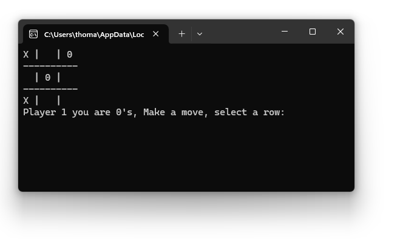
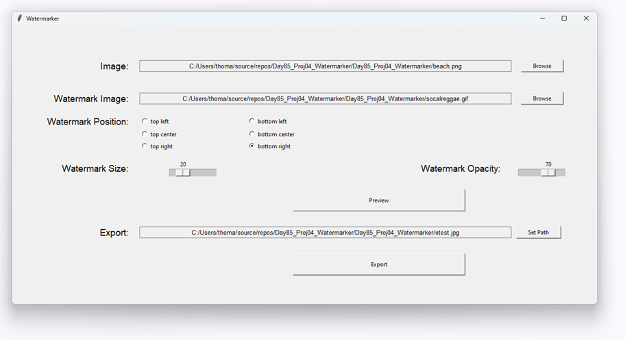
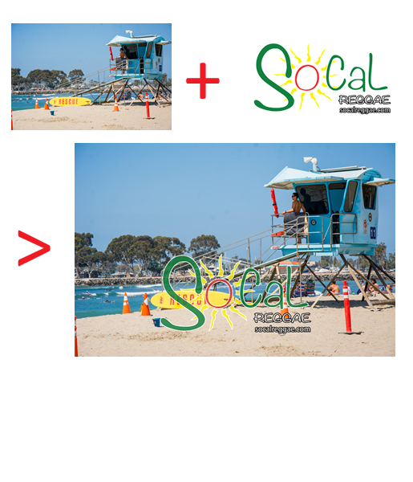

- Text-Based Tic Tac Toe in Python 
- User Interface-Based Image Watermarking application in Python  
-
Speed Typing program to test your words per minute, written in Python
- Used tkinter for the UI
- Involves monitoring the user input and calculating the results once the correct sentence was typed